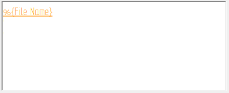
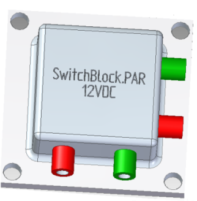
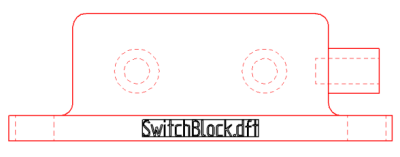

Place text as a profile
Use the Text Profile command to draw text-shaped profiles representing text on parts, sheet metal, assemblies, and on drawings.
-
In the synchronous modeling environment or in draft, choose Sketching tab→Insert group→Text Profile .
In the ordered modeling environment, you must be in sketch mode. Draw an ordered sketch of a part, or edit an existing sketch, and then choose Tools tab→Insert group→Text Profile.
Note:Use Command Finder to find the command in your current environment. For more information, see Find a command with Command Finder.

-
In the Text dialog box, add and format the text using any combination of the following techniques. Some of the formatting options in the dialog box apply per character, and some apply to all the text.
-
Type directly in the Text box. Press the Enter key to create multiline text and to insert lines to create paragraphs.
-
Paste text into the dialog box from another source.
-
Specify text profile font size—To create a profile with text height based on point size, select the check box—Use font size as point size—and then select the Point Size option and enter the point size.
Tip:You can create a new text profile using the point size, font size, or both font size and point size. You can edit a text profile to change from one method to another at any time. For information about both options, see Text dialog box.
-
Set spacing, margins, and alignment. You can apply boldface or italics to the selected text.
-
Add optional associative content—To access the general properties in the current document, as well as the properties in models attached to the current file, select the Property Text
 button. This opens the Select Property Text dialog box for you to choose the source and the property text to include. Example:
button. This opens the Select Property Text dialog box for you to choose the source and the property text to include. Example:To extract the actual name of a part and show it as embossed or stamped text on the part or in a drawing, select the %{File name} property text.
-
Apply formatting to a property text string by clicking inside the string to activate it—eligible property text changes color—and then clicking the Format button.

The Format Values dialog box shows you the available formatting options based on the type of property text you selected.
Note:Text profiles in part and sheet metal can extract properties and variables from the active document. Text profiles in draft can extract properties and variables from the active document, properties from named references, and properties from index references. For more information, see Selecting a property text source.
The plain text and actual value of property text is shown in the Preview pane of the Text dialog box as you create it.
-
-
The default anchor point is top-left. On the Text Profile command bar, click the Anchor button and select the anchor point you want to use for the text profile box.
A target cursor is displayed and attached to the text profile box at the specified anchor point.
-
Move the target cursor to position the text, and then click to place it. As you move the cursor around the graphics window, the text profile box moves with it. The target cursor can locate keypoints, lines, alignment indicators, centers, and edges. To be selectable, the elements must reside in the same sketch or plane as the text profile.
-
In a synchronous part or sheet metal model, you can highlight a plane or model face on which to place the text profile, and then press F3 to lock it.
-
To place a text profile along a curve or arc so that the text follows the curve, locate and click the start point or the end point of the curve or arc.
-
To create a vertical text profile, click a vertical line in the profile or sketch.
-
Look for additional placement prompts on PromptBar, such as press T to change the orientation of the text, or press N for multiline text options.
When you click to place the text profile, the anchor point is matched to the placement point. If you click a keypoint, a connect relationship is established between the text profile box and the element.
-
The following images show the resolved file name property text on a finished part and drawing.


-
To place a text profile along an arc or a curve—Set the Point On Element option on the Relationships tab on the IntelliSketch dialog box.
-
To rotate the text—You can attach text to a line in the sketch, and then use the Rotate command to rotate the line and the attached text.
-
To change existing text—Select the text, click the Text Step button on the command bar, and make your changes in the Text dialog box.
-
To reposition the text or change the text anchor point—Select the text, click the Location Step button on the command bar, and follow the prompts. For more information, see Edit a text profile.